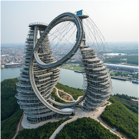

The inclined oval crown follows the image’s dominant upper silhouette. A deeper U-shaped box member wraps the open central void. Two tapering, terraced towers anchor both loops; cable fans and crossing tension members preserve the suspended, web-like character.
Floor loading → braced equivalent tower cores → fixed base supports. Loop loading → triangulated box chords → transfer struts → tower cores. Web members carry tension only and can become slack.
Each tower has a ground-level entrance, lift core and two conceptual stair shafts. Level floor plates connect to the core; a shared ground concourse connects both entrances. The steep structural loops are not designated walking routes. Dimensions, egress capacity and accessibility compliance need further design.
Reading the analysis: displacements and axial forces come from a 3D elastic truss solve, not an animation formula. Colors auto-scale to the current solution. Positive force is tension; negative is compression. Deformation is amplified for visibility. These results do not establish capacity or safety.
A single perspective image constrains the silhouette; depth, dimensions and connections are inferred.